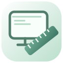

도면 공간 / MODEL
100%
✦ 도구를 선택하고 캔버스를 클릭해 그리기를 시작하세요
Y↑└──→ X
● 준비
X 0.00 Y 0.00모델

MachinaCAD / 0.2.22새로운 설계를 시작하거나 작업하던 도면을 이어서 열어보세요.
줄바꿈은 Enter로 입력하며, 입력한 폭에 맞춰 자동으로 줄이 나뉩니다. 서식은 전체 텍스트에 적용됩니다. 글자별 혼합 서식은 지원하지 않습니다.
모든 값은 mm입니다. 제조사 규칙에 맞게 설정하세요.
새 회로 부품과 배선에서 넷리스트를 생성하거나 직접 입력할 수 있습니다. 기존 단순 기호는 자동 인식하지 않습니다.
노드 전압과 전압원 전류를 계산합니다.